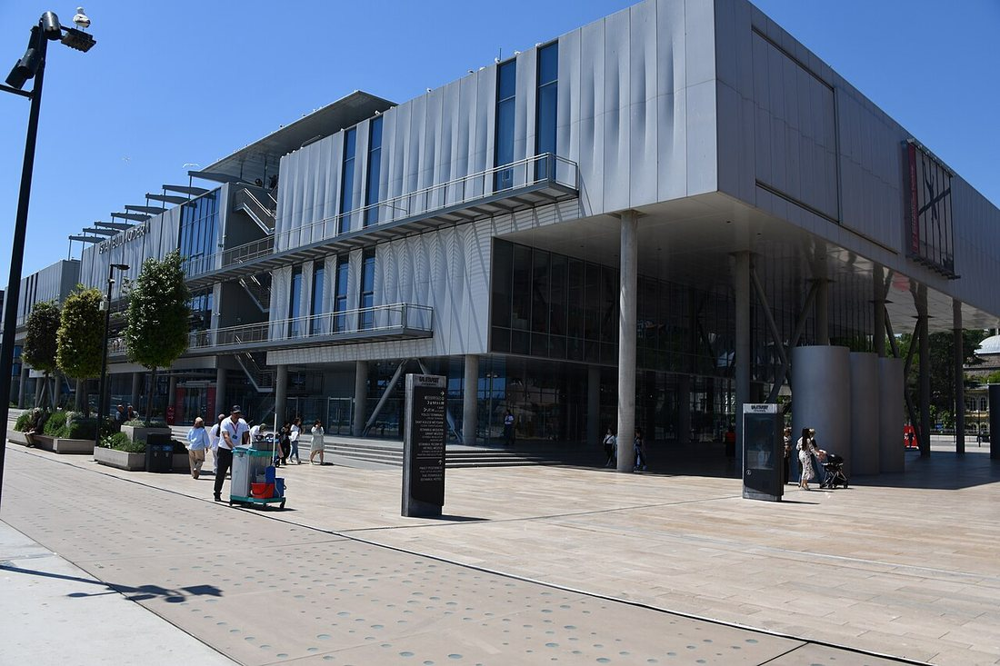
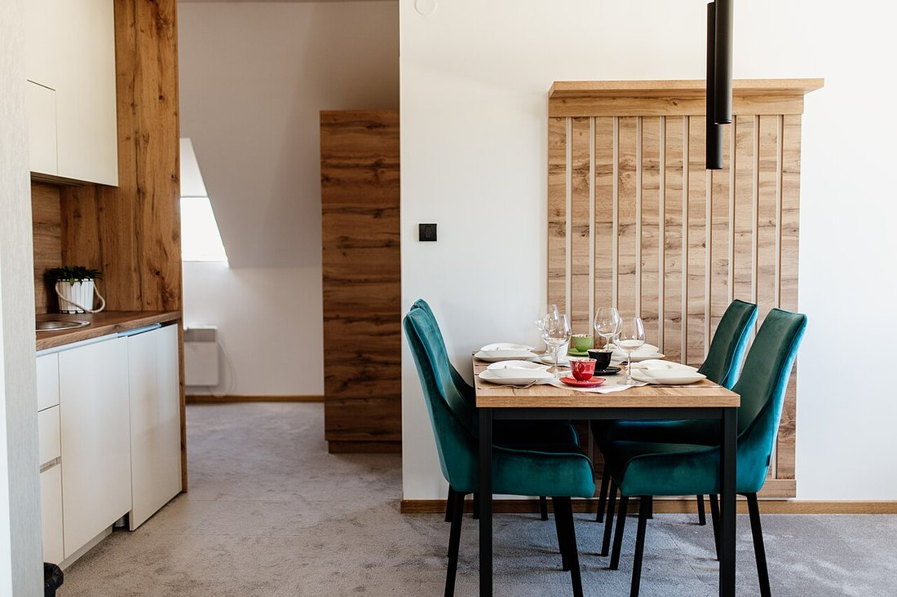
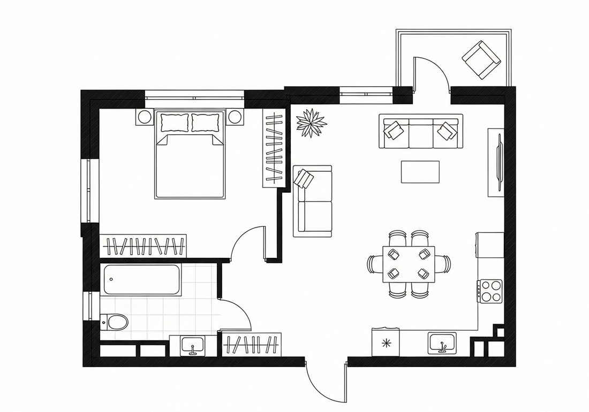
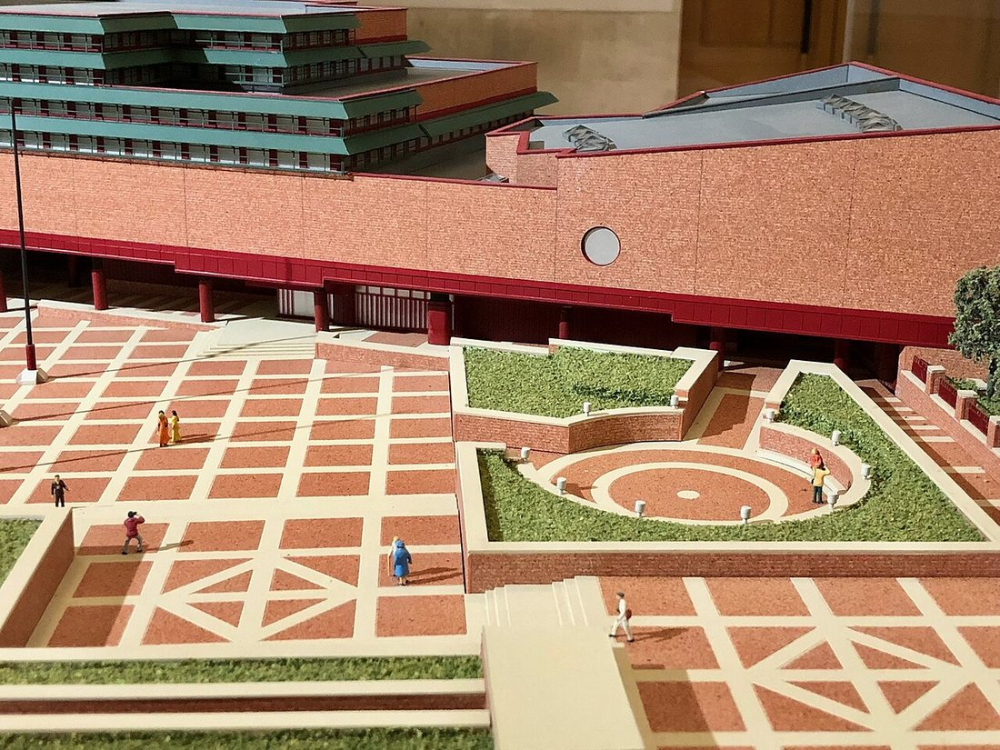
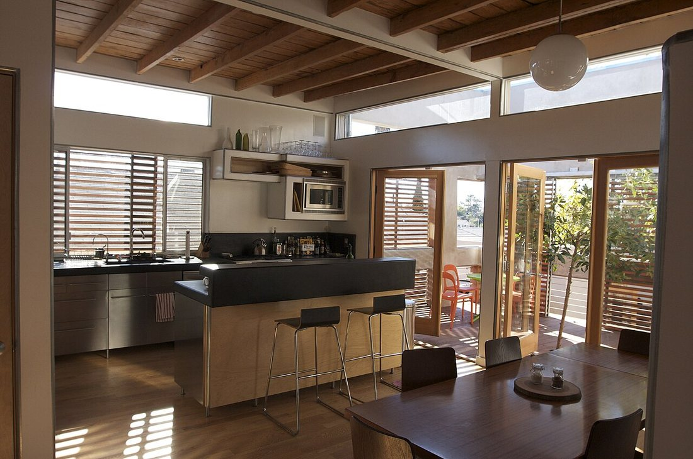

Көркем еңбек (ұлдар) · 5-бөлім · Дизайн және қолөнер Art & Craft (Boys) · Section 5 · Design & Crafts Художественный труд (мальчики) · Раздел 5 · Дизайн и ремёсла
🏛️ Сәулет және интерьер дизайны
🏛️ Architecture and Interior Design
🏛️ Архитектура и дизайн интерьера
Идеядан сызбаға, сызбадан ғимарат пен жайлы бөлмеге дейін. From an idea to a drawing, and from a drawing to a building and a comfortable room. От идеи к чертежу, от чертежа — к зданию и уютной комнате.
Сәулет (архитектура) — ғимараттар мен құрылыстарды жобалау және салу өнері әрі ғылымы. Сәулетші үйдің пішінін, биіктігін, материалын, терезе мен есіктің орнын ойлап табады әрі оны әдемі, берік және ыңғайлы етеді. Интерьер дизайны — ғимараттың ішкі кеңістігін жайлы әрі әсем жасайтын сала: бөлме жоспары, жиһаз, түс, жарық осы салаға кіреді. Сәулет «сыртын» құраса, интерьер дизайны «ішін» құрайды. Екеуінің ортақ мақсаты бір — адамға қолайлы, қауіпсіз әрі көркем орта жасау. Architecture is the art and science of designing and constructing buildings. An architect decides the shape, height and materials of a building and where the windows and doors go, making it beautiful, strong and convenient. Interior design is the field that makes the inside of a building comfortable and attractive: room layout, furniture, colour and lighting all belong here. Architecture shapes the "outside"; interior design shapes the "inside". Both share one aim — to create a space that is comfortable, safe and pleasing to people. Архитектура — это искусство и наука проектирования и строительства зданий. Архитектор продумывает форму, высоту и материалы дома, расположение окон и дверей, делая его красивым, прочным и удобным. Дизайн интерьера — это область, которая делает внутреннее пространство здания уютным и красивым: планировка комнат, мебель, цвет и свет относятся именно сюда. Архитектура создаёт «снаружи», а дизайн интерьера — «внутри». У обеих общая цель — создать пространство, удобное, безопасное и приятное для человека.
Екі сала — бір кеңістік Two Fields — One Space Две области — одно пространство


🔍 Үлкейту үшін суретті басыңыз🔍 Tap a photo to enlarge🔍 Нажмите на фото, чтобы увеличить
Жоба қалай дүниеге келеді How a Project Comes to Life Как рождается проект
Ешбір ғимарат бірден салынбайды. Алдымен идея, содан сызба, макет, тек содан кейін құрылыс. No building is built at once. First comes the idea, then a drawing, then a model, and only then construction. Ни одно здание не строят сразу. Сначала идея, потом чертёж, макет, и только затем стройка.

🔍 Жоспарды үлкейту үшін басыңыз🔍 Tap to enlarge the plan🔍 Нажмите, чтобы увеличить план
Идея мен тапсырма.Idea & brief.Идея и задание. Не керек, кім үшін, қанша бөлме, бюджет қандай — бәрін анықтаймыз.What is needed, for whom, how many rooms, what budget — everything is defined.Что нужно, для кого, сколько комнат, какой бюджет — всё определяют.
Эскиз және сызба.Sketch & drawing.Эскиз и чертёж. Қолмен немесе компьютерде жоспар мен қасбет сызылады (масштабпен).Plans and façades are drawn by hand or on a computer, to scale.План и фасад чертят от руки или на компьютере, в масштабе.
Макет (модель).Scale model.Макет. Кішірейтілген үлгі жасалады — пішін мен көлемді көзбен тексеру үшін.A small-scale model is made to check the form and volume by eye.Делают уменьшенную модель, чтобы проверить форму и объём «вживую».
Құрылыс және әрлеу.Build & finish.Стройка и отделка. Ғимарат салынады, содан кейін интерьер дизайны қолға алынады.The building is constructed, and then the interior design begins.Здание возводят, а затем берутся за дизайн интерьера.
Масштаб — сызбаны нақты өлшемнен қанша есе кішірейткеніміз. Мысалы, 1:100 деген — қағаздағы 1 см нақтыда 100 см (1 м) дегенді білдіреді.Scale shows how many times smaller the drawing is than reality. For example, 1:100 means 1 cm on paper equals 100 cm (1 m) in real life.Масштаб показывает, во сколько раз чертёж меньше реальности. Например, 1:100 значит: 1 см на бумаге равен 100 см (1 м) в жизни.

Макет не үшін керек? Why make a model? Зачем нужен макет?
Макет — ғимараттың не тұтас ауданның кішірейтілген үш өлшемді үлгісі. Ол сызбада көрінбейтінді көрсетеді: көлемдердің бір-бірімен үйлесімін, көлеңкелер мен биіктіктерді, ғимараттың қала ішіндегі орнын. Макетке қойылған кішкентай адам фигуралары масштабты сезінуге көмектеседі. Бүгінде картон, пенопласт, ағаш макетімен қатар компьютерлік 3D-модель де қолданылады. A model is a small three-dimensional copy of a building or a whole district. It shows what a drawing cannot: how volumes relate, shadows and heights, and the building's place in the city. The tiny human figures placed on the model help you feel the scale. Today, alongside card, foam and wood models, computer 3D models are also used. Макет — это уменьшенная трёхмерная копия здания или целого района. Он показывает то, что не видно на чертеже: как сочетаются объёмы, тени и высоты, место здания в городе. Маленькие фигурки людей на макете помогают почувствовать масштаб. Сегодня вместе с макетами из картона, пенопласта и дерева применяют и компьютерные 3D-модели.
Сәулет стильдері Architectural Styles Стили архитектуры
Әр дәуірдің өз стилі бар. Стильді тану — ғимаратты «оқи» білу деген сөз. Every era has its own style. Recognising a style means being able to "read" a building. У каждой эпохи свой стиль. Узнавать стиль — значит уметь «читать» здание.
| Стиль | Признаки | Пример |
|---|---|---|
| Классика | Колонны, симметрия, треугольные фронтоны, строгие пропорции. | Театры, музеи, дворцы. |
| Готика | Стрельчатые арки, высокие башни, витражи, устремление вверх. | Средневековые соборы. |
| Модерн | Плавные «природные» линии, декор из растений, кованый металл. | Особняки начала XX века. |
| Хай-тек | Стекло и металл, открытые конструкции, техника напоказ. | Современные офисы, музеи. |
| Минимализм | Простые формы, мало деталей, светлые цвета, много света. | Современные дома, квартиры. |
| Стиль | Белгілері | Мысалы |
|---|---|---|
| Классика | Бағаналар, симметрия, үшбұрышты фронтондар, қатаң пропорция. | Театрлар, мұражайлар, сарайлар. |
| Готика | Үшкір доғалар, биік мұнаралар, витраждар, жоғары ұмтылу. | Орта ғасыр соборлары. |
| Модерн | Иілген «табиғи» сызықтар, өсімдік оюы, соғылған металл. | ХХ ғ. басындағы үйлер. |
| Хай-тек | Шыны мен металл, ашық конструкциялар, техниканы көрсету. | Заманауи кеңселер, мұражайлар. |
| Минимализм | Қарапайым пішін, аз деталь, ашық түс, мол жарық. | Заманауи үйлер, пәтерлер. |
| Style | Features | Example |
|---|---|---|
| Classical | Columns, symmetry, triangular pediments, strict proportions. | Theatres, museums, palaces. |
| Gothic | Pointed arches, tall towers, stained glass, upward thrust. | Medieval cathedrals. |
| Art Nouveau | Flowing "natural" lines, plant-like decor, wrought metal. | Early-20th-century mansions. |
| High-tech | Glass and metal, exposed structure, technology on show. | Modern offices, museums. |
| Minimalism | Simple forms, few details, light colours, plenty of light. | Modern houses, flats. |
Интерьер дизайнының қағидалары Principles of Interior Design Принципы дизайна интерьера
Жақсы интерьер — әдемі ғана емес, ыңғайлы да. Мынау бес тірек қағида. A good interior is not only beautiful but also convenient. Here are five key principles. Хороший интерьер — не только красивый, но и удобный. Вот пять опорных принципов.

📐 ЗоналауZoningЗонирование
Кеңістікті қызметіне қарай бөлу: ұйқы, ас, жұмыс аймағы.Split the space by use: sleeping, eating, working zones.Деление пространства по назначению: сон, еда, работа.
💡 ЖарықLightСвет
Табиғи және жасанды жарықты дұрыс үйлестіру.Combine natural and artificial light correctly.Правильно сочетать естественный и искусственный свет.
🎨 Түс үйлесіміColour harmonyЦвет
2–3 негізгі түс таңдау, тым шұбар болмауы керек.Pick 2–3 main colours; avoid a chaotic palette.Выбрать 2–3 основных цвета, без пестроты.
🛋️ ЭргономикаErgonomicsЭргономика
Жиһаз адам бойына лайық, жүруге кедергісіз болуы тиіс.Furniture must fit the body and leave room to move.Мебель — по росту человека, проходы свободны.
⚖️ Тепе-теңдікBalanceБаланс
Заттар бір жерге үйілмей, кеңістікке біркелкі бөлінеді.Objects are spread evenly, not piled in one place.Предметы распределены равномерно, а не свалены в кучу.
🌿 ҮйлесімUnityЕдинство
Барлық элемент бір стильге бағынып, бір тұтастық құрайды.All elements follow one style and form a whole.Все элементы в одном стиле и образуют целое.
Осы саланың мамандары Professions in This Field Профессии этой области
🏛️ СәулетшіArchitectАрхитектор
Ғимараттарды жобалайды, пішін мен конструкцияны ойлап табады, сызбалар дайындайды.Designs buildings, invents their form and structure, prepares the drawings.Проектирует здания, придумывает форму и конструкцию, готовит чертежи.
🛋️ Интерьер дизайнеріInterior designerДизайнер интерьера
Бөлменің ішін жоспарлайды: жиһаз, түс, жарық, материал таңдайды.Plans the inside of rooms: chooses furniture, colour, lighting and materials.Планирует внутреннее пространство: мебель, цвет, свет, материалы.
📏 Инженер-құрылысшыConstruction engineerИнженер-строитель
Ғимараттың беріктігі мен қауіпсіздігін есептейді, құрылысты басқарады.Calculates a building's strength and safety, and manages construction.Рассчитывает прочность и безопасность здания, ведёт стройку.
✅ Есте сақта ✅ Remember ✅ Запомните
1
Сәулет — ғимараттың сырты, интерьер дизайны — оның іші.Architecture is the outside of a building, interior design is its inside.Архитектура — это снаружи здания, дизайн интерьера — его внутри.
2
Кез келген жоба сызбадан басталады; сызба әрқашан масштабпен жасалады.Every project starts with a drawing; a drawing is always made to scale.Любой проект начинается с чертежа; чертёж всегда делают в масштабе.
3
Жақсы кеңістік әдемі әрі ыңғайлы — пайдалылық пен сұлулық бірге жүреді.A good space is beautiful and convenient — usefulness and beauty go together.Хорошее пространство красиво и удобно — польза и красота идут вместе.
Сәулет пен интерьер дизайны — техника мен өнердің тоғысқан жері. Дұрыс өлшем, ойластырылған жоспар және сұлулыққа деген талғам — әрбір жайлы үйдің негізі. Architecture and interior design are where engineering meets art. Accurate measurement, a thoughtful plan and a sense of beauty are the foundation of every comfortable home. Архитектура и дизайн интерьера — это место встречи техники и искусства. Точные размеры, продуманный план и чувство красоты — основа каждого уютного дома.